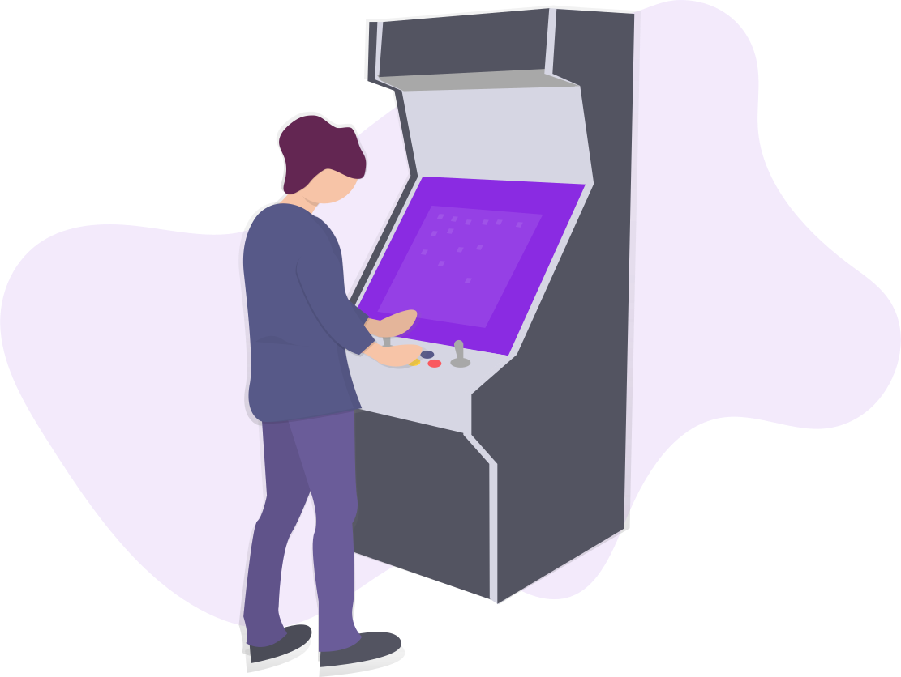
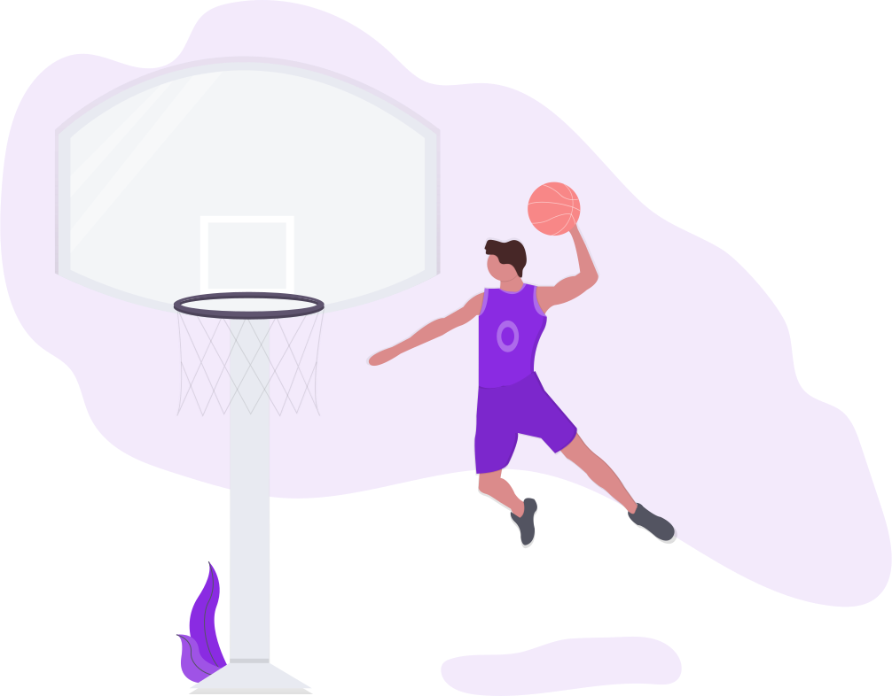

Jogar gamesJogar games pra mim é uma das maneiras que tenho de tirar o tédio ou stress |
 |


|  |
Jogar BasqueteComecei a jogar basquete com meus amigos do nada, gostamos tanto que continuamos a jogar. Apesar de eu não ser muito bom, gosto de mais de jogar. Dar toco nos outros é muito divertido hahaha. |
Hobbies que eu queria ter

Cozinhar é algo que eu faço corriqueiramente mas não por hobby,, minhas habilidades estão limitadas a coisas que são fáceis de fritar(linguiça, frango...).
Caminhar sempre é bem vindo, durante uma fase da minha vida comecei a caminhar, mas do nada, parei. Atualmente falo que vou voltar mas venho procastinando muito.

 _ Kimetsu no yaiba Filme Mugen Train.gif)